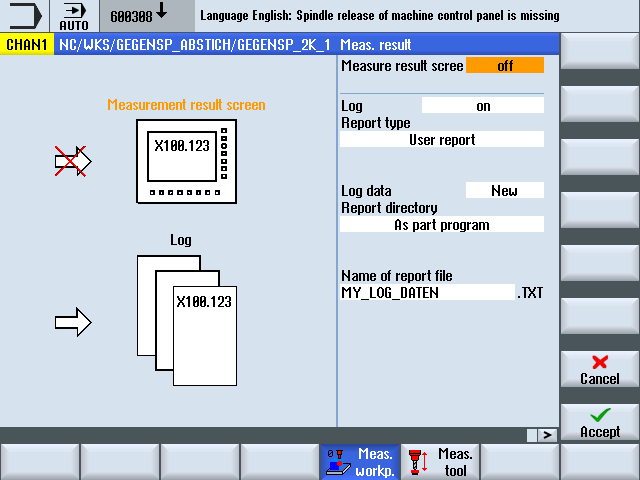

With this function, the user freely defines the contents of the log lines and stores them in an array of string variables (string length 200).
The contents of the string array are logged when a new CYCLE160 is called. The logging always begins with array index 0 and continues until an empty string (i.e. string length 0) is found.
For simple applications, an NCK-global array of string variables is predefined in the PGUD block:
DEF NCK STRING[200] S_LOGTXT[10]
This means that 10 lines can be immediately logged.
If this is not sufficient, the user can alternatively create a second string array of any length with the predefined name S_USERTXT[n] in a separate GUD block (e.g. MGUD or UGUD):
DEF NCK STRING[200] S_USERTXT[n]
The logging function checks whether the S_USERTXT array is available. If it is available, the contents of this array are logged, if not, the contents of S_LOGTXT.
At the program position where CYCLE160 is called, the logging is performed according to the logging destination set by the CYCLE150 call – exactly the same as the logging of measurement results.
This function can be used to output a complete user-specific log (without any reference to the measuring) or to insert additional lines in standard logs.
If additional lines are to be written in standard logs in tabular format, the user must ensure the column formatting in these strings (insert separators ";").
"User log" is selected in the CYCLE150 screen form for the log control.
There is no difference between text format and tabular format – the user determines the contents. The corresponding selection field is hidden for the user log.
If the path is entered, it is performed with the same dialog as for the standard log.
User log screen form
The following must be written in the part program:
CYCLE150 call to activate the user log
Assignment of the log contents to the predefined string variables
CYCLE160 for the output of the log contents
CYCLE160 has no transfer parameters. The user must program it without a screen form.
Programming example:
... | |
| ; Logging ON |
| ; Delete old data array |
| ; Compile log contents |
| |
| ; Programming of empty line: 1 x blank |
| |
| |
| ; Write user log |
... | |
| |
Log extract:
MACHINE: ABC_12345
LOGFILE COMPENSATION DATA
VALUE1 = 123.456
VALUE2 = 789.333
Explanations:
N50 … Logging is switched on
Destination: In the same path as the calling program
The log is appended
Log type: User log
Logging "on"
N52 - N56 log content
N60 … CYCLE160 call: Data is now written
Value 1 and value 2 mirror the contents of the R-parameters R101 and R102 at the time of the log output.
Programming example:
--- | |
| ; Logging ON, write header |
| ; Delete old data array |
| ; Write user data |
| |
| |
| |
| ; Write user data to log |
| |
| |
| |
... | |
| |
Log extract:
************************************************************************************************** | |
|
|
| |
| |
| |
************************************************************************************************* | |
HOLE DM 20H7
LARGESTDIMENSION:20.021
SMALLESTDIMENSION:20.000
SPINDLETEMPERATURE:68.7 DEG
---------------------------------------------------------------------------------------------------------------- | ||
| : |
|
| ||
---------------------------------------------------------------------------------------------------------------- | ||
| ||
| ||
|
| |
-------------------------------------------------------------------------- | ||
|
|
|
|
|
|
|
|
|
-------------------------------------------------------------------------- | ||
| Setpoint | Measured | Difference |
|
|
|
|
|
|
|
|
|
|
|
|
--------------------------------------------------------------------------------------------------------------- | |||